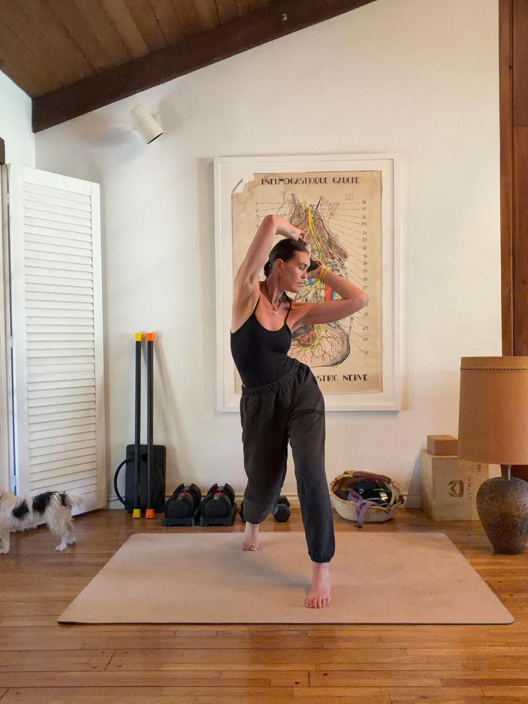

A Practice in
Real Life Movement.


Private, group, and live sessions in Los Angeles and online.
Move with Sam
The same precision Sam brings to a private session, guided step by step, ready when you are.
Explore the programsSamSation is not a fitness program. It is a practice built around how bodies actually move in life, not in a gym.
About the practice

Retreats · First access